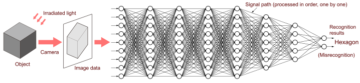

Artificial intelligence
Artificial intelligence can recognize "what the object you are looking at is shaped like" and is becoming an indispensable part of modern life, including automatic driving of cars and quality control of industrial products. Neural networks and deep learning are artificial intelligence technologies inspired by the how the brains of living things work.
An object is photographed with a camera, and the image data is imported into artificial intelligence.
Signals travel over these many lines. The computer calculates the data on this line one by one.
When an image of a cube was imported, it was misrecognized as a hexagon. This is because the image data was flat and did not contain the 3D information of the object. To avoid misrecognition, the same object should be shot from different angles.
In the new system above, the light from the object is processed midway, rather than the camera converting it to an electrical signal right away. In the optical system side on the first half, holograms are used to extract 3D information of an object from light waves. It reverse utilizes the property of holograms to project a 3D image.
On the optical system side, the “signal path” equivalent to tens of billions of lines is calculated in an instant as light passes. Owing to this, the amount of data processed on the computer side can be significantly reduced.